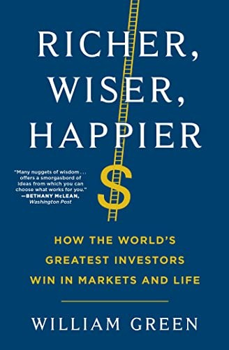

威廉·格林（William Green）是资深财经记者，曾供职于《时代》《巴伦周刊》《财富》《福布斯》《纽约客》等顶级媒体，专注于报道全球顶尖投资人逾三十年。《更富有、更睿智、更快乐》出版于2021年，由西蒙与舒斯特旗下的斯克里布纳出版社发行，出版后被翻译成二十七种语言，中文版于2022年由中国青年出版社出版，译者为马林梅。格林在写作本书期间，通过数百小时的深度采访，近距离接触了四十余位全球顶级投资人，包括查理·芒格、霍华德·马克斯、约翰·邓普顿爵士、杰克·博格尔、埃德·索普、莫尼什·帕布莱、乔尔·格林布拉特等。这本书并非投资策略指南，而是一部关于卓越投资人的思维方式、生活哲学和人生智慧的深度肖像集。
全书按投资人的核心特质组织章节，聚焦于那些将市场与人生融为一体的思考方式。格林发现，这些顶级投资人的共同特质并非超凡的智力或精准的预测能力，而是长期主义的信念、对不确定性的坦然接受、以及将理性思维延伸至生活方方面面的能力。以尼克·斯利普（Nick Sleep）为例——这位曾任职于马拉松资产管理公司的英国基金经理，通过押注亚马逊和好市多（Costco）实现了惊人的长期回报，他的秘诀不在于模型，而在于对"规模效益共享"这一商业模式的深刻洞察与长达十年的耐心持有。书中关于芒格的章节尤为精彩——格林深入描绘了芒格如何通过跨学科的"心智模型格栅"理解世界，以及这种思维方式如何渗透到他的投资判断、阅读习惯和日常谈话中。书中也诚实地描述了这些投资人的代价：许多人为了专注于思考而牺牲了社交生活，他们的成功既令人羡慕，也令人警醒。
这本书收获了投资界罕见的高度评价。查理·芒格读后给出了简洁有力的背书："这是有史以来最好的投资书之一。"（"ONE OF THE BEST INVESTING BOOKS EVER WRITTEN."）霍华德·马克斯称本书"把最顶级的投资思维以最好的文学方式呈现了出来"。根据Goodreads评分，这本书被评为"最受欢迎的一百本投资书"中的第一名，是近年来最受投资界关注的非技术性投资著作。格林的写作风格将调查报道的严谨性与叙事文学的感染力融合在一起，使读者在追随投资大师故事的同时，也被引导反思自己对财富、智慧和幸福的理解。
这本书对商业与投资读者的特殊价值在于它的诚实——格林不回避这些投资大师的局限与矛盾，同时也不迷信财富本身。书名中"更富有、更睿智、更快乐"三者并列，暗示了格林的真正主旨：投资是人生的一部分，而非全部；最优秀的投资人之所以能够长期胜出，恰恰是因为他们懂得如何在市场之外也过得好。对于那些试图在投资技术之外寻找更深层根基的读者，这本书是近年来最值得一读的新作之一。